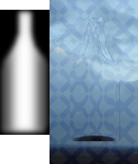

Lens object allows you to distort everything below the lens object like if it was seen through a piece of glass or some water.
The effect is controlled by a grayscale image you can edit at edittime from Lens' setupbox or you can import it from your external bitmap files, active objects or overlay objects.
Theese lens images:The default lens effect is the zoom effect. The brighter the gray color is, the more zoomed the objects and background begind the lens will look like. The darker they get, the more 'zoomed out' it will be. So RGB(128,128,128) (gray) will mean no zoom at all. (transparent color whon't zoom as well)
There is also another lens effect called "Refraction". It is not like the zoom effect. If your lens is one plain color, it whon't distort the background at all. If there are differences in the lens image, it will dirstort the background. The more difference in color there are from a pixel to its neighbours, the more distortion.
You can alter the 'amount' of distortion Lens should do to the background by changing the 'Height multiplier'.
By default it's set to 1.0
If you change this to 2.0 it means that you get twice the distortion. You can also set it to lower values for getting a lesser distortion. If you set it to 0, there will be no effect at all.